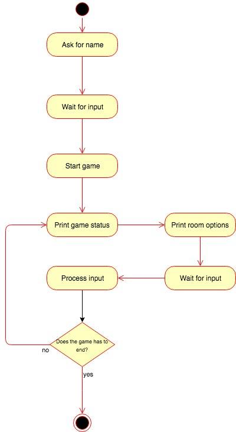

Application Design and Architecture¶ ↑
| Author |
Guillermo Pérez Trueba Luis Ángel Lucatero Villanueva Alan Joseph Salazar Romero |
| Date |
November 26, 2018 |
If you haven’t done so already, install the Hanna Nouveau Ruby gem. At the terminal type:
$ gem install hanna-nouveau
The directory structure for the application and its documentation is as follows:
FinalProject/
├─ doc/ Folder produced by RDoc.
├─ img/ Folder for the documentation’s image files.
└─ src/ Folder for the application’s source code.
├─ maps/ Folder for the AWS Lambda function implementation.
├─ rooms/ Folder for the application’s Sinatra microservice for rooms description.
└─ store/ Folder for the application’s Sinatra microservice for the game store.
The builddocs.sh shell script contains the required
instructions to produce the RDoc documentation. Run the script from the
greeter directory, typing at the terminal:
$ bash builddocs.sh
; ========================================================================================================================================================================================================================================================================================================================================================================================================================================================== ; ==========================================================================================================================================================================================================================================================================================================================================================================================================================================================
Installing and Running the Application¶ ↑
To run our final project you need to have Ruby 2.3.1 (recommended) or greater in order to be able tu run the source code, the sinatra gem ([www.sinatrarb.com/) is also needed as well as an account of AWS is required beacuse we are using the AWS Lambda service (aws.amazon.com/lambda/)
If don't have installed the Sinatra Ruby gem. At the terminal type:
$ gem install sinatra
Before running the client code, you need to start the two microservices of room and stor with this commands:
FinalProject/src/rooms$ ruby -I . -w rooms.rb FinalProject/src/store$ ruby -I . -w store.rb
To run the client code, so it can actually play the game you need to run the following command at the terminal from the /FinalProject/src/ directory:
$ ruby -I . -w client.rb
After running this command, the only thing left to do is to play the game.
; ========================================================================================================================================================================================================================================================================================================================================================================================================================================================== ; ==========================================================================================================================================================================================================================================================================================================================================================================================================================================================
4+1 Architectural View Model¶ ↑
We use Philippe Kruchten's “4+1 View Model” to document the application's architecture.
Logical View¶ ↑
The logical view contains information about the various parts of the system. In UML the logical view is typically modeled using class diagrams.

Process View¶ ↑
The process view focuses on the runtime behavior of the system. In UML, activity diagrams are used to model this view.

Development View¶ ↑
The development view focuses on software modules and subsystems. In UML, package diagrams are used to model the development view.

Physical View¶ ↑
The physical view describes the physical deployment of the system, revealing which pieces of software run on what pieces of hardware. In UML, deployment diagrams are used to model the physical view.

Scenarios¶ ↑
This view describes the functionality of the system from the perspective from outside world. It contains diagrams describing what the system is supposed to do from a black box perspective. UML use case diagrams are used for this view.

Patterns Used¶ ↑
Briefly mention all the patterns that your application uses and identify where exactly. In our example, the following pattern are clearly used:
-
Domain-Specific Language: The
store.rbalongside with therooms.rbfiles consists of a series of Sinatra routes. Sinatra is a DSL for creating web applications in Ruby. -
Command Pattern: The way the action buttons were implemented, asimilates to the escence of the Command Pattern.
-
Adapter Pattern: The way we make work together the
lambda_funciton.pyfile with theclient.rbfile is a resembance of how the adapter pattern works, but insteadof interfaces, are files.
Acknowledgments¶ ↑
To our professor Ariel Ortiz, for the oportunity to create something like this and for teaching us the necessary topics to be able to create this.
References¶ ↑
-
A. Harris, K. Haase. Sinatra: Up and Running. O’Reilly, 2011. Safari Books Online.
-
Ph. Kruchten. The 4+1 View Model of Architecture. IEEE Software, vol. 12 (6), pp. 45-50, 1995. http://www.ics.uci.edu/~andre/ics223w2006/kruchten3.pdf Accessed November 3, 2017.
-
R. Olsen. Design Patterns in Ruby. Addison-Wesley, 2007. Available through Safari Books Online.
-
Ruby-Doc.org. RDoc Markup Reference. http://ruby-doc.org/stdlib-2.4.1/libdoc/rdoc/rdoc/RDoc/Markup.html Accessed May 3, 2018.